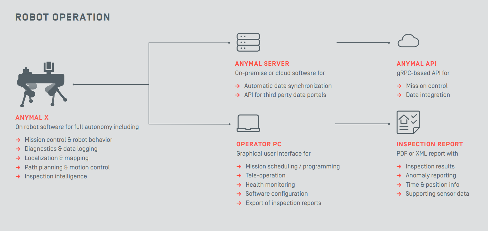
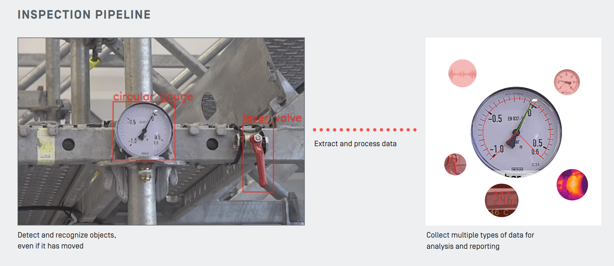
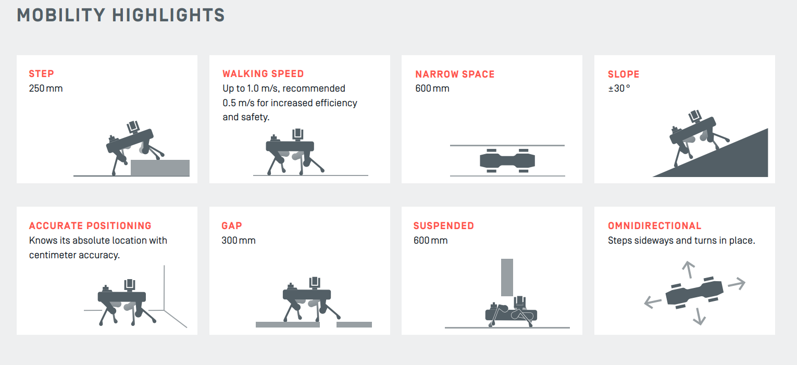
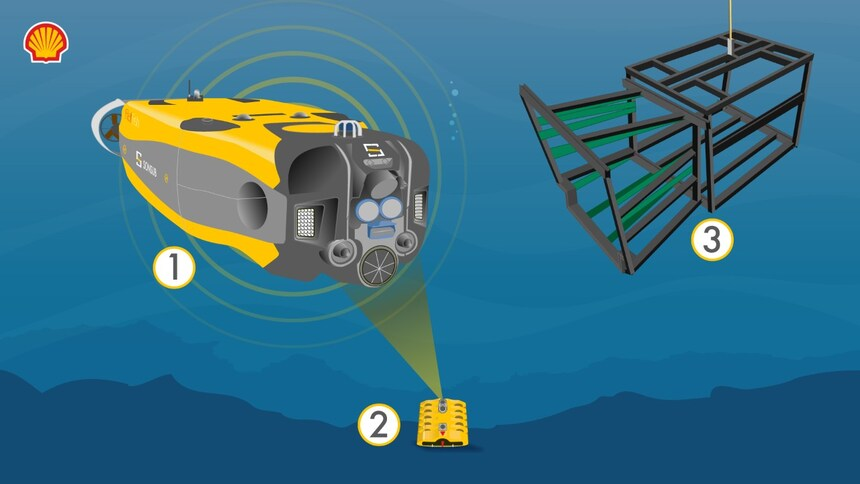
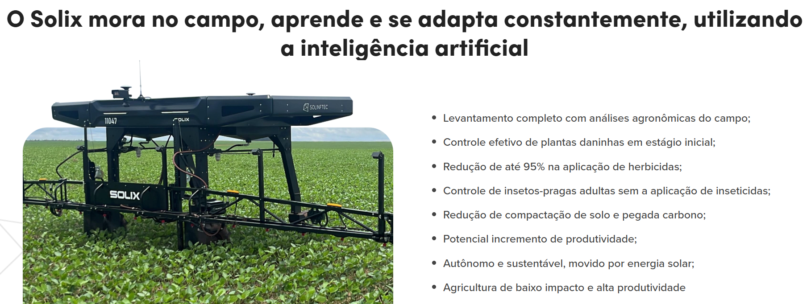
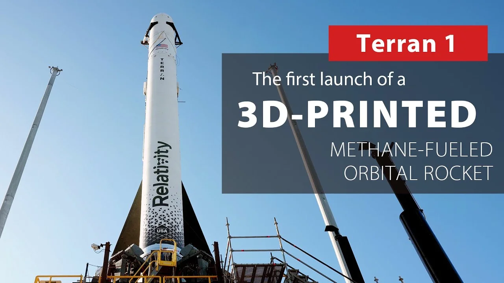
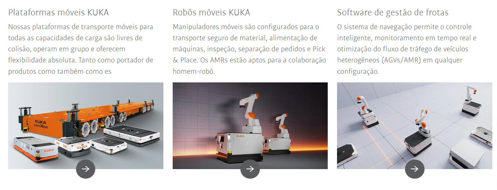
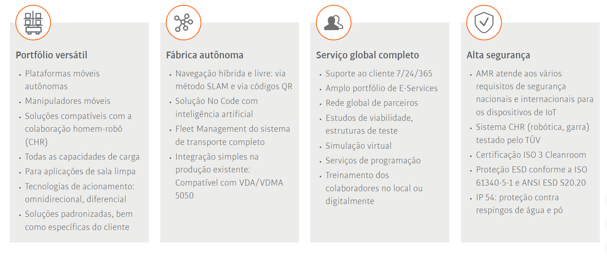

Conectando Mentes e Máquinas
Indústria 1.0 & 2.0: Mecanização e Produção em Massa.
Indústria 3.0: Automação clássica (Robôs em gaiolas).
Indústria 4.0: Sistemas Ciberfísicos (CPS), IoT e IA.
"O maquinário deixou de ser apenas força motriz."
O físico e o digital indissociáveis.
Comunicação máquina a máquina.
Percepção contextual e decisão autônoma.
Processamento no próprio robô.
Desafios Antes:
Dependência de "supermergulhadores" humanos em atividades de altíssimo risco e altos custos com navios de suporte e cabos umbilicais.
O que Traz a Robótica:
Robôs submarinos (FlatFish) inspecionam até 3.000m autonomamente. Robôs com pernas (ANYmal X) navegam em plataformas cheias de escadas para ler anomalias.
Desafios que Faltam:
Comunicação de alta velocidade embaixo d'água (wi-fi submarino) e resistência a longo prazo contra a extrema corrosão do oceano.




Desafios Antes:
Tratores gigantescos que causavam "amassamento" das plantações e pulverização generalizada que desperdiçava agrotóxicos e poluía o solo.
O que Traz a Robótica:
Drones escaneiam o estresse da planta e tratores autônomos aplicam herbicida exclusivamente nas ervas daninhas (redução de 95% de químicos).
Desafios que Faltam:
O "Apagão Conectivo" nas áreas rurais (falta de 4G/5G). Os robôs dependem de Edge Computing, o que encarece as máquinas.

Desafios Antes:
Processos manuais lentos em estruturas gigantescas, exigindo precisão milimétrica. Trabalhadores expostos a riscos ergonômicos e insalubres (pintura e lixamento).
O que Traz a Robótica:
Robôs de furação e rebitagem (ex: em fuselagens) e cobots que manuseiam materiais compósitos com extrema repetibilidade, velocidade e zero fadiga.
Desafios que Faltam:
Adaptabilidade em tempo real usando IA e visão computacional para lidar com variações nas peças, além da complexa certificação de segurança de máquinas autônomas.

Desafios Antes:
Montagem manual ou maquinário inflexível: lentidão, erros de precisão e dificuldade em alterar modelos de produção.
O que Traz a Robótica:
Cobots (robôs colaborativos) adaptam a montagem dinamicamente para fabricar modelos variados na mesma esteira, sem interrupções.
Desafios que Faltam:
Integrar maquinários legados na rede IoT e programar robôs para tarefas de acabamento sensíveis.


"A robótica na Indústria 4.0 não se trata de substituir humanos, mas de criar um ecossistema colaborativo, altamente eficiente e seguro."